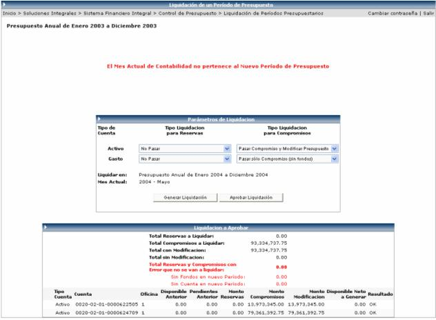
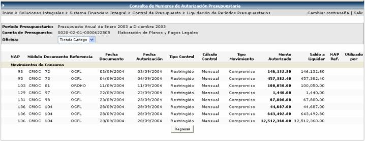

para traer las cuentas
que formarán la liquidación a aprobar:
para traer las cuentas
que formarán la liquidación a aprobar:La liquidación de periodos presupuestarios consiste en trasladar los montos comprometidos y reservados de cuentas de un periodo anterior a cuentas de un periodo nuevo. Generalmente la liquidación se realiza al cierre de un periodo presupuestario.
Ambos periodos tienen que estar abiertos, y se tiene que ejecutar el cierre anual del periodo a liquidar (o sea del periodo viejo).
Primero se tiene que definir una serie de parámetros para realizar la liquidación. Dichos parámetros son: el Tipo de Cuenta y por cada una de ellas, el tipo de liquidación de reservas y el de compromisos.
Para las cuentas de Activo y Gasto con el tipo de Liquidación para Reservas se tienen los siguientes valores a escoger:
No pasar = no se toman en cuenta para la liquidación
Pasar solo reserva (sin fondos) = se pasan los montos y se rebajan del nuevo presupuesto
Pasar reserva y modificar presupuesto = se pasan los montos y se aumentan al nuevo
presupuesto para que a la hora de hacer el rebajo no
afecte el monto original del nuevo presupuesto.
Para las cuentas de Activo y Gasto con el tipo de Liquidación para Compromisos se tienen los siguientes valores a escoger:
No pasar = no se toman en cuenta para la liquidación
Pasar solo compromiso (sin fondos) = se pasan los montos y se rebajan del nuevo presupuesto
Pasar compromiso y modificar presupuesto = se pasan los montos y se aumentan al nuevo
presupuesto para que a la hora de hacer el rebajo
no afecte el monto original del nuevo presupuesto.
Una vez parametrizada
la liquidación, se presiona el botón para traer las cuentas
que formarán la liquidación a aprobar:

Al generar la liquidación se pueden presentar dos tipos de error, los cuales se presentarían en color ROJO, los mismos pueden ser:
1. Que al traer una cuenta, me deje el Disponible en Negativo
2. Que una cuenta exista en el periodo a liquidar, pero no existe en el nuevo periodo.
Aunque se presenten ambos
casos, se puede Aprobar la Liquidación, lo que pasaría con esas cuentas
que presentan error, es que no se liquidarían, o sea no se tomarían en
cuenta. Para Aprobar la liquidación se presiona el botón  .
.
Si se quieren ver los movimientos de las cuentas a liquidar se hace un click sobre la cuenta y se presenta la siguiente pantalla, que muestra el módulo donde se origino el movimiento, la referencia, la fecha del documento, la fecha de autorización, el tipo de control, el método de cálculo, el tipo de movimiento, el monto autorizado, el saldo a liquidar, entre otra información:

Además para ver el detalle de cada movimiento, basta con hacer click sobre el movimiento y se despliega la siguiente pantalla que muestra toda la información relacionada al movimiento: